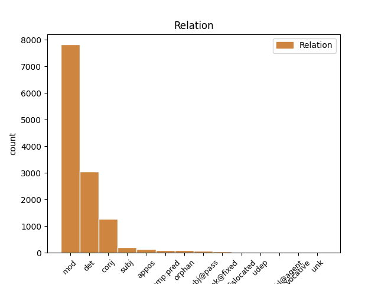
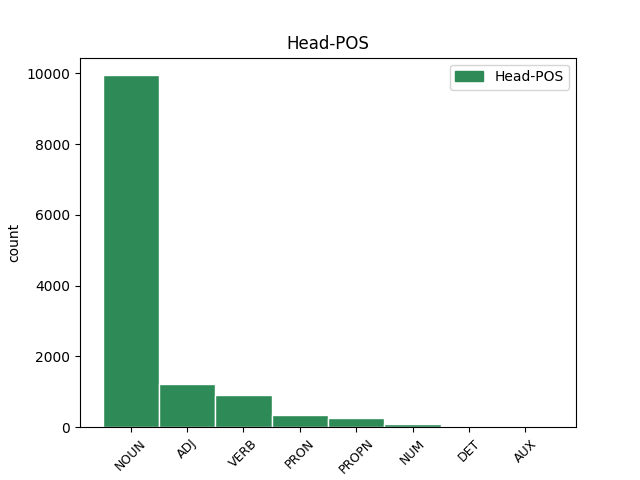
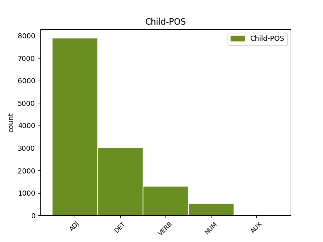

Distribution of features within this leaf



Agreement Rules sorted by frequency.
- When the dependent token is the modifer(mod) of the head token, and the dependent token is ADJ.
1 Obiurgationes _ _ _ _ 0 _ _ _
2 etiam _ _ _ _ 0 _ _ _
3 non _ _ _ _ 0 _ _ _
4 numquam _ _ _ _ 0 _ _ _
5 incidunt _ _ _ _ 0 _ _ _
6 necessariae _ _ _ _ 0 _ _ _
7 in _ _ _ _ 0 _ _ _
8 quibus _ _ _ _ 0 _ _ _
9 utendum _ _ _ _ 0 _ _ _
10 est _ _ _ _ 0 _ _ _
11 fortasse _ _ _ _ 0 _ _ _
12 et _ _ _ _ 0 _ _ _
13 vocis _ _ _ _ 0 _ _ _
14 contentione contentio NOUN Nb Case=Abl|Gender=Fem|Number=Sing 0 _ _ _
15 maiore magnus ADJ A- Case=Abl|Degree=Cmp|Gender=Fem|Number=Sing 14 mod _ ref=1.136
16 et _ _ _ _ 0 _ _ _
17 verborum _ _ _ _ 0 _ _ _
18 gravitate _ _ _ _ 0 _ _ _
19 acriore _ _ _ _ 0 _ _ _
20 id _ _ _ _ 0 _ _ _
21 agendum _ _ _ _ 0 _ _ _
22 etiam _ _ _ _ 0 _ _ _
23 ut _ _ _ _ 0 _ _ _
24 ea _ _ _ _ 0 _ _ _
25 facere _ _ _ _ 0 _ _ _
26 videamur _ _ _ _ 0 _ _ _
27 irati _ _ _ _ 0 _ _ _
1 Sed _ _ _ _ 0 _ _ _
2 ut _ _ _ _ 0 _ _ _
3 ad _ _ _ _ 0 _ _ _
4 urendum _ _ _ _ 0 _ _ _
5 et _ _ _ _ 0 _ _ _
6 secandum _ _ _ _ 0 _ _ _
7 sic _ _ _ _ 0 _ _ _
8 ad _ _ _ _ 0 _ _ _
9 hoc _ _ _ _ 0 _ _ _
10 genus _ _ _ _ 0 _ _ _
11 castigandi _ _ _ _ 0 _ _ _
12 raro _ _ _ _ 0 _ _ _
13 inviti _ _ _ _ 0 _ _ _
14 que _ _ _ _ 0 _ _ _
15 veniemus _ _ _ _ 0 _ _ _
16 ne _ _ _ _ 0 _ _ _
17 c _ _ _ _ 0 _ _ _
18 umquam _ _ _ _ 0 _ _ _
19 nisi _ _ _ _ 0 _ _ _
20 necessario _ _ _ _ 0 _ _ _
21 si _ _ _ _ 0 _ _ _
22 nulla _ _ _ _ 0 _ _ _
23 reperietur _ _ _ _ 0 _ _ _
24 alia alius DET Px Case=Nom|Gender=Fem|Number=Sing 25 det _ ref=1.136
25 medicina medicina NOUN Nb Case=Nom|Gender=Fem|Number=Sing 0 _ _ _
1 Sit _ _ _ _ 0 _ _ _
2 ergo _ _ _ _ 0 _ _ _
3 hic _ _ _ _ 0 _ _ _
4 sermo _ _ _ _ 0 _ _ _
5 in _ _ _ _ 0 _ _ _
6 quo _ _ _ _ 0 _ _ _
7 Socratici _ _ _ _ 0 _ _ _
8 maxime _ _ _ _ 0 _ _ _
9 excellunt _ _ _ _ 0 _ _ _
10 lenis lenis ADJ A- Case=Nom|Degree=Pos|Gender=Masc|Number=Sing 0 _ _ _
11 minime _ _ _ _ 0 _ _ _
12 que _ _ _ _ 0 _ _ _
13 pertinax pertinax ADJ A- Case=Nom|Degree=Pos|Gender=Masc|Number=Sing 10 conj _ ref=1.134
14 insit _ _ _ _ 0 _ _ _
15 in _ _ _ _ 0 _ _ _
16 eo _ _ _ _ 0 _ _ _
17 lepos _ _ _ _ 0 _ _ _
1 Innumerabiles _ _ _ _ 0 _ _ _
2 aliae _ _ _ _ 0 _ _ _
3 dissimilitudines _ _ _ _ 0 _ _ _
4 sunt _ _ _ _ 0 _ _ _
5 naturae _ _ _ _ 0 _ _ _
6 morum mos NOUN Nb Case=Gen|Gender=Masc|Number=Plur 0 _ _ _
7 que _ _ _ _ 0 _ _ _
8 minime _ _ _ _ 0 _ _ _
9 tamen _ _ _ _ 0 _ _ _
10 vituperandorum vitupero VERB V- Case=Gen|Gender=Masc|Number=Plur|VerbForm=Gdv 6 mod _ ref=1.109
1 Ex _ _ _ _ 0 _ _ _
2 quo _ _ _ _ 0 _ _ _
3 magis _ _ _ _ 0 _ _ _
4 emergit _ _ _ _ 0 _ _ _
5 quale _ _ _ _ 0 _ _ _
6 sit _ _ _ _ 0 _ _ _
7 decorum _ _ _ _ 0 _ _ _
8 illud _ _ _ _ 0 _ _ _
9 ideo _ _ _ _ 0 _ _ _
10 quia _ _ _ _ 0 _ _ _
11 nihil _ _ _ _ 0 _ _ _
12 decet _ _ _ _ 0 _ _ _
13 invita _ _ _ _ 0 _ _ _
14 Minerva _ _ _ _ 0 _ _ _
15 ut _ _ _ _ 0 _ _ _
16 aiunt _ _ _ _ 0 _ _ _
17 id _ _ _ _ 0 _ _ _
18 est _ _ _ _ 0 _ _ _
19 adversante adversor VERB V- Case=Abl|Gender=Masc|Number=Sing|Tense=Pres|VerbForm=Part|Voice=Act 0 _ _ _
20 et _ _ _ _ 0 _ _ _
21 repugnante repugno VERB V- Case=Abl|Gender=Masc|Number=Sing|Tense=Pres|VerbForm=Part|Voice=Act 19 conj _ ref=1.110
22 natura _ _ _ _ 0 _ _ _
1 Intellegendum _ _ _ _ 0 _ _ _
2 etiam _ _ _ _ 0 _ _ _
3 est _ _ _ _ 0 _ _ _
4 duabus duo NUM Ma Case=Abl|Gender=Fem|Number=Plur 11 mod _ ref=1.107
5 quasi _ _ _ _ 0 _ _ _
6 nos _ _ _ _ 0 _ _ _
7 a _ _ _ _ 0 _ _ _
8 natura _ _ _ _ 0 _ _ _
9 indutos _ _ _ _ 0 _ _ _
10 esse _ _ _ _ 0 _ _ _
11 personis persona NOUN Nb Case=Abl|Gender=Fem|Number=Plur 0 _ _ _
1 Sunt _ _ _ _ 0 _ _ _
2 his _ _ _ _ 0 _ _ _
3 alii _ _ _ _ 0 _ _ _
4 multum _ _ _ _ 0 _ _ _
5 dispares _ _ _ _ 0 _ _ _
6 simplices _ _ _ _ 0 _ _ _
7 et _ _ _ _ 0 _ _ _
8 aperti _ _ _ _ 0 _ _ _
9 qui _ _ _ _ 0 _ _ _
10 nihil _ _ _ _ 0 _ _ _
11 ex _ _ _ _ 0 _ _ _
12 occulto _ _ _ _ 0 _ _ _
13 nihil nihil ADJ Px Case=Acc|Gender=Neut|Number=Sing 16 subj _ ref=1.109
14 de _ _ _ _ 0 _ _ _
15 insidiis _ _ _ _ 0 _ _ _
16 agendum ago VERB V- Case=Acc|Gender=Neut|Number=Sing|VerbForm=Gdv 0 _ _ _
17 putant _ _ _ _ 0 _ _ _
18 veritatis _ _ _ _ 0 _ _ _
19 cultores _ _ _ _ 0 _ _ _
20 fraudis _ _ _ _ 0 _ _ _
21 inimici _ _ _ _ 0 _ _ _
22 item _ _ _ _ 0 _ _ _
23 que _ _ _ _ 0 _ _ _
24 alii _ _ _ _ 0 _ _ _
25 qui _ _ _ _ 0 _ _ _
26 quidvis _ _ _ _ 0 _ _ _
27 perpetiantur _ _ _ _ 0 _ _ _
28 cuivis _ _ _ _ 0 _ _ _
29 deserviant _ _ _ _ 0 _ _ _
30 dum _ _ _ _ 0 _ _ _
31 quod _ _ _ _ 0 _ _ _
32 velint _ _ _ _ 0 _ _ _
33 consequantur _ _ _ _ 0 _ _ _
34 ut _ _ _ _ 0 _ _ _
35 Sullam _ _ _ _ 0 _ _ _
36 et _ _ _ _ 0 _ _ _
37 Marcum _ _ _ _ 0 _ _ _
38 Crassum _ _ _ _ 0 _ _ _
39 videbamus _ _ _ _ 0 _ _ _
1 Admodum _ _ _ _ 0 _ _ _
2 autem _ _ _ _ 0 _ _ _
3 tenenda _ _ _ _ 0 _ _ _
4 sunt _ _ _ _ 0 _ _ _
5 sua suus ADJ Pt Case=Nom|Gender=Neut|Number=Plur|Person=3|Poss=Yes|Reflex=Yes 0 _ _ _
6 cuique _ _ _ _ 0 _ _ _
7 non _ _ _ _ 0 _ _ _
8 vitiosa vitiosus ADJ A- Case=Nom|Degree=Pos|Gender=Neut|Number=Plur 5 appos _ ref=1.110
9 sed _ _ _ _ 0 _ _ _
10 tamen _ _ _ _ 0 _ _ _
11 propria _ _ _ _ 0 _ _ _
12 quo _ _ _ _ 0 _ _ _
13 facilius _ _ _ _ 0 _ _ _
14 decorum _ _ _ _ 0 _ _ _
15 illud _ _ _ _ 0 _ _ _
16 quod _ _ _ _ 0 _ _ _
17 quaerimus _ _ _ _ 0 _ _ _
18 retineatur _ _ _ _ 0 _ _ _
1 Quo _ _ _ _ 0 _ _ _
2 genere _ _ _ _ 0 _ _ _
3 non _ _ _ _ 0 _ _ _
4 modo _ _ _ _ 0 _ _ _
5 Plautus _ _ _ _ 0 _ _ _
6 noster _ _ _ _ 0 _ _ _
7 et _ _ _ _ 0 _ _ _
8 Atticorum _ _ _ _ 0 _ _ _
9 antiqua _ _ _ _ 0 _ _ _
10 comoedia _ _ _ _ 0 _ _ _
11 sed _ _ _ _ 0 _ _ _
12 etiam _ _ _ _ 0 _ _ _
13 philosophorum _ _ _ _ 0 _ _ _
14 Socraticorum _ _ _ _ 0 _ _ _
15 libri _ _ _ _ 0 _ _ _
16 referti _ _ _ _ 0 _ _ _
17 sunt _ _ _ _ 0 _ _ _
18 multa multus ADJ A- Case=Nom|Degree=Pos|Gender=Neut|Number=Plur 22 subj@pass _ ref=1.104
19 que _ _ _ _ 0 _ _ _
20 multorum _ _ _ _ 0 _ _ _
21 facete _ _ _ _ 0 _ _ _
22 dicta dico VERB V- Aspect=Perf|Case=Nom|Gender=Neut|Number=Plur|Tense=Past|VerbForm=Part|Voice=Pass 0 _ _ _
23 ut _ _ _ _ 0 _ _ _
24 ea _ _ _ _ 0 _ _ _
25 quae _ _ _ _ 0 _ _ _
26 a _ _ _ _ 0 _ _ _
27 sene _ _ _ _ 0 _ _ _
28 Catone _ _ _ _ 0 _ _ _
29 collecta _ _ _ _ 0 _ _ _
30 sunt _ _ _ _ 0 _ _ _
31 quae _ _ _ _ 0 _ _ _
32 vocant _ _ _ _ 0 _ _ _
33 ἀποφθέγματα _ _ _ _ 0 _ _ _
1 Quamvis _ _ _ _ 0 _ _ _
2 enim _ _ _ _ 0 _ _ _
3 Themistocles _ _ _ _ 0 _ _ _
4 iure _ _ _ _ 0 _ _ _
5 laudetur _ _ _ _ 0 _ _ _
6 et _ _ _ _ 0 _ _ _
7 sit _ _ _ _ 0 _ _ _
8 eius _ _ _ _ 0 _ _ _
9 nomen _ _ _ _ 0 _ _ _
10 quam _ _ _ _ 0 _ _ _
11 Solonis _ _ _ _ 0 _ _ _
12 illustrius _ _ _ _ 0 _ _ _
13 citetur _ _ _ _ 0 _ _ _
14 que _ _ _ _ 0 _ _ _
15 Salamis _ _ _ _ 0 _ _ _
16 clarissimae _ _ _ _ 0 _ _ _
17 testis _ _ _ _ 0 _ _ _
18 victoriae _ _ _ _ 0 _ _ _
19 quae _ _ _ _ 0 _ _ _
20 anteponatur _ _ _ _ 0 _ _ _
21 consilio _ _ _ _ 0 _ _ _
22 Solonis _ _ _ _ 0 _ _ _
23 ei _ _ _ _ 0 _ _ _
24 quo _ _ _ _ 0 _ _ _
25 primum _ _ _ _ 0 _ _ _
26 constituit _ _ _ _ 0 _ _ _
27 Areopagitas _ _ _ _ 0 _ _ _
28 non _ _ _ _ 0 _ _ _
29 minus _ _ _ _ 0 _ _ _
30 praeclarum praeclarus ADJ A- Case=Nom|Degree=Pos|Gender=Neut|Number=Sing 34 comp:pred _ ref=1.75
31 hoc _ _ _ _ 0 _ _ _
32 quam _ _ _ _ 0 _ _ _
33 illud _ _ _ _ 0 _ _ _
34 iudicandum iudico VERB V- Case=Nom|Gender=Neut|Number=Sing|VerbForm=Gdv 0 _ _ _
35 est _ _ _ _ 0 _ _ _
1 Omnino _ _ _ _ 0 _ _ _
2 qui _ _ _ _ 0 _ _ _
3 rei _ _ _ _ 0 _ _ _
4 publicae _ _ _ _ 0 _ _ _
5 praefuturi _ _ _ _ 0 _ _ _
6 sunt _ _ _ _ 0 _ _ _
7 duo _ _ _ _ 0 _ _ _
8 Platonis _ _ _ _ 0 _ _ _
9 praecepta praeceptum NOUN Nb Case=Acc|Gender=Neut|Number=Plur 0 _ _ _
10 teneant _ _ _ _ 0 _ _ _
11 unum unus NUM Ma Case=Acc|Gender=Neut|Number=Sing 9 appos _ ref=1.85
12 ut _ _ _ _ 0 _ _ _
13 utilitatem _ _ _ _ 0 _ _ _
14 civium _ _ _ _ 0 _ _ _
15 sic _ _ _ _ 0 _ _ _
16 tueantur _ _ _ _ 0 _ _ _
17 ut _ _ _ _ 0 _ _ _
18 quaecumque _ _ _ _ 0 _ _ _
19 agunt _ _ _ _ 0 _ _ _
20 ad _ _ _ _ 0 _ _ _
21 eam _ _ _ _ 0 _ _ _
22 referant _ _ _ _ 0 _ _ _
23 obliti _ _ _ _ 0 _ _ _
24 commodorum _ _ _ _ 0 _ _ _
25 suorum _ _ _ _ 0 _ _ _
26 alterum _ _ _ _ 0 _ _ _
27 ut _ _ _ _ 0 _ _ _
28 totum _ _ _ _ 0 _ _ _
29 corpus _ _ _ _ 0 _ _ _
30 rei _ _ _ _ 0 _ _ _
31 publicae _ _ _ _ 0 _ _ _
32 curent _ _ _ _ 0 _ _ _
33 ne _ _ _ _ 0 _ _ _
34 dum _ _ _ _ 0 _ _ _
35 partem _ _ _ _ 0 _ _ _
36 aliquam _ _ _ _ 0 _ _ _
37 tuentur _ _ _ _ 0 _ _ _
38 reliquas _ _ _ _ 0 _ _ _
39 deserant _ _ _ _ 0 _ _ _
1 reliquum _ _ _ _ 0 _ _ _
2 spatium _ _ _ _ 0 _ _ _
3 quod _ _ _ _ 0 _ _ _
4 est _ _ _ _ 0 _ _ _
5 non _ _ _ _ 0 _ _ _
6 amplius _ _ _ _ 0 _ _ _
7 pedum _ _ _ _ 0 _ _ _
8 milium millium NUM Ma Case=Gen|Gender=Neut|Number=Plur 0 _ _ _
9 sescentorum sescentorum NUM Ma Case=Gen|Gender=Neut|Number=Plur 8 unk@fixed _ ref=1.38.3
10 qua _ _ _ _ 0 _ _ _
11 flumen _ _ _ _ 0 _ _ _
12 intermittit _ _ _ _ 0 _ _ _
13 mons _ _ _ _ 0 _ _ _
14 continet _ _ _ _ 0 _ _ _
15 magna _ _ _ _ 0 _ _ _
16 altitudine _ _ _ _ 0 _ _ _
17 ita _ _ _ _ 0 _ _ _
18 ut _ _ _ _ 0 _ _ _
19 radices _ _ _ _ 0 _ _ _
20 eius _ _ _ _ 0 _ _ _
21 montis _ _ _ _ 0 _ _ _
22 ex _ _ _ _ 0 _ _ _
23 utraque _ _ _ _ 0 _ _ _
24 parte _ _ _ _ 0 _ _ _
25 ripae _ _ _ _ 0 _ _ _
26 fluminis _ _ _ _ 0 _ _ _
27 contingant _ _ _ _ 0 _ _ _
1 in _ _ _ _ 0 _ _ _
2 his _ _ _ _ 0 _ _ _
3 et _ _ _ _ 0 _ _ _
4 nobilissimi _ _ _ _ 0 _ _ _
5 philosophi _ _ _ _ 0 _ _ _
6 longe _ _ _ _ 0 _ _ _
7 que _ _ _ _ 0 _ _ _
8 principes _ _ _ _ 0 _ _ _
9 et _ _ _ _ 0 _ _ _
10 quidam _ _ _ _ 0 _ _ _
11 homines _ _ _ _ 0 _ _ _
12 severi _ _ _ _ 0 _ _ _
13 et _ _ _ _ 0 _ _ _
14 graves _ _ _ _ 0 _ _ _
15 ne _ _ _ _ 0 _ _ _
16 c _ _ _ _ 0 _ _ _
17 populi _ _ _ _ 0 _ _ _
18 ne _ _ _ _ 0 _ _ _
19 c _ _ _ _ 0 _ _ _
20 principum _ _ _ _ 0 _ _ _
21 mores _ _ _ _ 0 _ _ _
22 ferre _ _ _ _ 0 _ _ _
23 potuerunt _ _ _ _ 0 _ _ _
24 vixerunt _ _ _ _ 0 _ _ _
25 que _ _ _ _ 0 _ _ _
26 non nonnullus ADJ A- Case=Nom|Degree=Pos|Gender=Masc|Number=Plur 0 _ _ _
27 nulli nulli ADJ A- Case=Nom|Degree=Pos|Gender=Masc|Number=Plur 26 unk@fixed _ ref=1.69
28 in _ _ _ _ 0 _ _ _
29 agris _ _ _ _ 0 _ _ _
30 delectati _ _ _ _ 0 _ _ _
31 re _ _ _ _ 0 _ _ _
32 sua _ _ _ _ 0 _ _ _
33 familiari _ _ _ _ 0 _ _ _
1 Alter _ _ _ _ 0 _ _ _
2 est _ _ _ _ 0 _ _ _
3 si _ _ _ _ 0 _ _ _
4 tempore _ _ _ _ 0 _ _ _
5 fit _ _ _ _ 0 _ _ _
6 ut _ _ _ _ 0 _ _ _
7 si _ _ _ _ 0 _ _ _
8 remisso _ _ _ _ 0 _ _ _
9 animo _ _ _ _ 0 _ _ _
10 gravissimo _ _ _ _ 0 _ _ _
11 homine _ _ _ _ 0 _ _ _
12 dignus _ _ _ _ 0 _ _ _
13 alter alter ADJ A- Case=Nom|Degree=Pos|Gender=Masc|Number=Sing 0 _ _ _
14 ne _ _ _ _ 0 _ _ _
15 libero liber ADJ A- Case=Abl|Degree=Pos|Gender=Masc|Number=Sing 13 orphan _ ref=1.104
16 quidem _ _ _ _ 0 _ _ _
17 si _ _ _ _ 0 _ _ _
18 rerum _ _ _ _ 0 _ _ _
19 turpitudini _ _ _ _ 0 _ _ _
20 adhibetur _ _ _ _ 0 _ _ _
21 verborum _ _ _ _ 0 _ _ _
22 obscenitas _ _ _ _ 0 _ _ _
1 summa _ _ _ _ 0 _ _ _
2 erat _ _ _ _ 0 _ _ _
3 capitum _ _ _ _ 0 _ _ _
4 Helvetiorum _ _ _ _ 0 _ _ _
5 milium _ _ _ _ 0 _ _ _
6 ducentorum _ _ _ _ 0 _ _ _
7 sexaginta _ _ _ _ 0 _ _ _
8 trium _ _ _ _ 0 _ _ _
9 Tulingorum _ _ _ _ 0 _ _ _
10 milium _ _ _ _ 0 _ _ _
11 triginta _ _ _ _ 0 _ _ _
12 sex _ _ _ _ 0 _ _ _
13 Latobrigorum _ _ _ _ 0 _ _ _
14 quattuordecim _ _ _ _ 0 _ _ _
15 Rauracorum _ _ _ _ 0 _ _ _
16 viginti viginti NUM Ma Case=Gen|Gender=Neut|Number=Plur 0 _ _ _
17 trium _ _ _ _ 0 _ _ _
18 Boiorum _ _ _ _ 0 _ _ _
19 triginta triginta NUM Ma Case=Gen|Gender=Neut|Number=Plur 16 conj _ ref=1.29.2
20 duorum _ _ _ _ 0 _ _ _
1 Horum _ _ _ _ 0 _ _ _
2 adventu _ _ _ _ 0 _ _ _
3 tanta _ _ _ _ 0 _ _ _
4 rerum _ _ _ _ 0 _ _ _
5 commutatio _ _ _ _ 0 _ _ _
6 est _ _ _ _ 0 _ _ _
7 facta _ _ _ _ 0 _ _ _
8 ut _ _ _ _ 0 _ _ _
9 nostri _ _ _ _ 0 _ _ _
10 etiam _ _ _ _ 0 _ _ _
11 qui _ _ _ _ 0 _ _ _
12 vulneribus _ _ _ _ 0 _ _ _
13 confecti _ _ _ _ 0 _ _ _
14 procubuissent _ _ _ _ 0 _ _ _
15 scutis _ _ _ _ 0 _ _ _
16 innixi _ _ _ _ 0 _ _ _
17 proelium _ _ _ _ 0 _ _ _
18 redintegrarent _ _ _ _ 0 _ _ _
19 calones _ _ _ _ 0 _ _ _
20 perterritos perterreo VERB V- Aspect=Perf|Case=Acc|Gender=Masc|Number=Plur|Tense=Past|VerbForm=Part|Voice=Pass 22 comp:pred _ ref=2.27.1
21 hostes _ _ _ _ 0 _ _ _
22 conspicati conspicor VERB V- Aspect=Perf|Case=Nom|Gender=Masc|Number=Plur|Tense=Past|VerbForm=Part|Voice=Pass 0 _ _ _
23 etiam _ _ _ _ 0 _ _ _
24 inermes _ _ _ _ 0 _ _ _
25 armatis _ _ _ _ 0 _ _ _
26 occurrerent _ _ _ _ 0 _ _ _
27 equites _ _ _ _ 0 _ _ _
28 vero _ _ _ _ 0 _ _ _
29 ut _ _ _ _ 0 _ _ _
30 turpitudinem _ _ _ _ 0 _ _ _
31 fugae _ _ _ _ 0 _ _ _
32 virtute _ _ _ _ 0 _ _ _
33 delerent _ _ _ _ 0 _ _ _
34 omnibus _ _ _ _ 0 _ _ _
35 in _ _ _ _ 0 _ _ _
36 locis _ _ _ _ 0 _ _ _
37 pugnae _ _ _ _ 0 _ _ _
38 se _ _ _ _ 0 _ _ _
39 legionariis _ _ _ _ 0 _ _ _
40 militibus _ _ _ _ 0 _ _ _
41 praeferrent _ _ _ _ 0 _ _ _
1 erunt _ _ _ _ 0 _ _ _
2 enim _ _ _ _ 0 _ _ _
3 ex _ _ _ _ 0 _ _ _
4 hoc _ _ _ _ 0 _ _ _
5 quinque _ _ _ _ 0 _ _ _
6 in _ _ _ _ 0 _ _ _
7 domo _ _ _ _ 0 _ _ _
8 una _ _ _ _ 0 _ _ _
9 divisi _ _ _ _ 0 _ _ _
10 tres tres NUM Ma Case=Nom|Gender=Masc|Number=Plur 0 _ _ _
11 in _ _ _ _ 0 _ _ _
12 duo _ _ _ _ 0 _ _ _
13 et _ _ _ _ 0 _ _ _
14 duo duo NUM Ma Case=Nom|Gender=Masc|Number=Plur 10 orphan _ ref=LUKE_12.52
15 in _ _ _ _ 0 _ _ _
16 tres _ _ _ _ 0 _ _ _
1 Ut _ _ _ _ 0 _ _ _
2 enim _ _ _ _ 0 _ _ _
3 sermone _ _ _ _ 0 _ _ _
4 eo _ _ _ _ 0 _ _ _
5 debemus _ _ _ _ 0 _ _ _
6 uti _ _ _ _ 0 _ _ _
7 qui _ _ _ _ 0 _ _ _
8 innatus _ _ _ _ 0 _ _ _
9 est _ _ _ _ 0 _ _ _
10 nobis _ _ _ _ 0 _ _ _
11 ne _ _ _ _ 0 _ _ _
12 ut _ _ _ _ 0 _ _ _
13 quidam quidam ADJ Px Case=Nom|Gender=Masc|Number=Sing 0 _ _ _
14 Graeca _ _ _ _ 0 _ _ _
15 verba _ _ _ _ 0 _ _ _
16 inculcantes inculco VERB V- Case=Nom|Gender=Masc|Number=Plur|Tense=Pres|VerbForm=Part|Voice=Act 13 orphan _ ref=1.111
17 iure _ _ _ _ 0 _ _ _
18 optimo _ _ _ _ 0 _ _ _
19 rideamur _ _ _ _ 0 _ _ _
20 sic _ _ _ _ 0 _ _ _
21 in _ _ _ _ 0 _ _ _
22 actiones _ _ _ _ 0 _ _ _
23 omnem _ _ _ _ 0 _ _ _
24 que _ _ _ _ 0 _ _ _
25 vitam _ _ _ _ 0 _ _ _
26 nullam _ _ _ _ 0 _ _ _
27 discrepantiam _ _ _ _ 0 _ _ _
28 conferre _ _ _ _ 0 _ _ _
29 debemus _ _ _ _ 0 _ _ _
1 Sed _ _ _ _ 0 _ _ _
2 quo _ _ _ _ 0 _ _ _
3 difficilius difficilis ADJ A- Case=Nom|Degree=Cmp|Gender=Neut|Number=Sing 5 dislocated _ ref=1.64
4 hoc _ _ _ _ 0 _ _ _
5 praeclarius praeclarus ADJ A- Case=Nom|Degree=Cmp|Gender=Neut|Number=Sing 0 _ _ _
1 unum unus NUM Ma Case=Nom|Gender=Neut|Number=Sing 2 subj _ ref=1.104
2 illiberale illiberalis ADJ A- Case=Nom|Degree=Pos|Gender=Neut|Number=Sing 0 _ _ _
3 petulans _ _ _ _ 0 _ _ _
4 flagitiosum _ _ _ _ 0 _ _ _
5 obscenum _ _ _ _ 0 _ _ _
1 Sed _ _ _ _ 0 _ _ _
2 quo _ _ _ _ 0 _ _ _
3 difficilius _ _ _ _ 0 _ _ _
4 hoc hic ADJ Pd Case=Abl|Gender=Neut|Number=Sing 5 udep _ ref=1.64
5 praeclarius praeclarus ADJ A- Case=Nom|Degree=Cmp|Gender=Neut|Number=Sing 0 _ _ _
1 haec hic ADJ Pd Case=Acc|Gender=Neut|Number=Plur 0 _ _ _
2 tamen _ _ _ _ 0 _ _ _
3 summa _ _ _ _ 0 _ _ _
4 nisi _ _ _ _ 0 _ _ _
5 Milo _ _ _ _ 0 _ _ _
6 in _ _ _ _ 0 _ _ _
7 campo _ _ _ _ 0 _ _ _
8 obnuntiasset _ _ _ _ 0 _ _ _
9 comitia _ _ _ _ 0 _ _ _
10 futura sum AUX V- Case=Acc|Gender=Neut|Number=Plur|Tense=Fut|VerbForm=Part|Voice=Act 1 mod _ ref=4.3.4
1 Occisis occido VERB V- Aspect=Perf|Case=Abl|Gender=Neut|Number=Plur|Tense=Past|VerbForm=Part|Voice=Pass 0 _ _ _
2 ad _ _ _ _ 0 _ _ _
3 hominum _ _ _ _ 0 _ _ _
4 milibus mille NUM Ma Case=Abl|Gender=Neut|Number=Plur 1 subj@pass _ ref=2.33.5
5 quattuor _ _ _ _ 0 _ _ _
6 reliqui _ _ _ _ 0 _ _ _
7 in _ _ _ _ 0 _ _ _
8 oppidum _ _ _ _ 0 _ _ _
9 reiecti _ _ _ _ 0 _ _ _
10 sunt _ _ _ _ 0 _ _ _
1 humaniter _ _ _ _ 0 _ _ _
2 meae _ _ _ _ 0 _ _ _
3 que _ _ _ _ 0 _ _ _
4 dignitatis _ _ _ _ 0 _ _ _
5 quoad _ _ _ _ 0 _ _ _
6 mihi _ _ _ _ 0 _ _ _
7 satis satisfacio VERB V- Aspect=Perf|Case=Nom|Gender=Neut|Number=Sing|Tense=Past|VerbForm=Part|Voice=Pass 0 _ _ _
8 factum factum VERB V- Aspect=Perf|Case=Nom|Gender=Neut|Number=Sing|Tense=Past|VerbForm=Part|Voice=Pass 7 unk@fixed _ ref=4.18.1
9 esset _ _ _ _ 0 _ _ _
10 habendam _ _ _ _ 0 _ _ _
11 sibi _ _ _ _ 0 _ _ _
12 rationem _ _ _ _ 0 _ _ _
13 putabat _ _ _ _ 0 _ _ _
1 si _ _ _ _ 0 _ _ _
2 pacem _ _ _ _ 0 _ _ _
3 populus _ _ _ _ 0 _ _ _
4 Romanus _ _ _ _ 0 _ _ _
5 cum _ _ _ _ 0 _ _ _
6 Helvetiis _ _ _ _ 0 _ _ _
7 faceret _ _ _ _ 0 _ _ _
8 in _ _ _ _ 0 _ _ _
9 eam _ _ _ _ 0 _ _ _
10 partem _ _ _ _ 0 _ _ _
11 ituros eo VERB V- Case=Acc|Gender=Masc|Number=Plur|Tense=Fut|VerbForm=Part|Voice=Act 0 _ _ _
12 atque _ _ _ _ 0 _ _ _
13 ibi _ _ _ _ 0 _ _ _
14 futuros sum AUX V- Case=Acc|Gender=Masc|Number=Plur|Tense=Fut|VerbForm=Part|Voice=Act 11 conj _ ref=1.13.3
15 Helvetios _ _ _ _ 0 _ _ _
16 ubi _ _ _ _ 0 _ _ _
17 eos _ _ _ _ 0 _ _ _
18 Caesar _ _ _ _ 0 _ _ _
19 constituisset _ _ _ _ 0 _ _ _
20 atque _ _ _ _ 0 _ _ _
21 esse _ _ _ _ 0 _ _ _
22 voluisset _ _ _ _ 0 _ _ _
1 non _ _ _ _ 0 _ _ _
2 enim _ _ _ _ 0 _ _ _
3 estis _ _ _ _ 0 _ _ _
4 vos _ _ _ _ 0 _ _ _
5 loquentes _ _ _ _ 0 _ _ _
6 sed _ _ _ _ 0 _ _ _
7 Spiritus spiritus NOUN Nb Case=Nom|Gender=Masc|Number=Sing 0 _ _ _
8 Sanctus sanctus ADJ A- Case=Nom|Degree=Pos|Gender=Masc|Number=Sing 7 unk _ ref=MARK_13.11
1 inventus invenio VERB V- Aspect=Perf|Case=Nom|Gender=Masc|Number=Sing|Tense=Past|VerbForm=Part|Voice=Pass 0 _ _ _
2 sum _ _ _ _ 0 _ _ _
3 non _ _ _ _ 0 _ _ _
4 quaerentibus quaero VERB V- Case=Abl|Gender=Masc|Number=Plur|Tense=Pres|VerbForm=Part|Voice=Act 1 comp:obl@agent _ ref=ROM_10.20
5 me _ _ _ _ 0 _ _ _
1 non _ _ _ _ 0 _ _ _
2 vos _ _ _ _ 0 _ _ _
3 met _ _ _ _ 0 _ _ _
4 ipsos _ _ _ _ 0 _ _ _
5 defendentes defendo VERB V- Case=Nom|Gender=Masc|Number=Plur|Tense=Pres|VerbForm=Part|Voice=Act 0 _ _ _
6 carissimi carus ADJ A- Case=Voc|Degree=Sup|Gender=Masc|Number=Plur 5 vocative _ ref=ROM_12.19
7 sed _ _ _ _ 0 _ _ _
8 date _ _ _ _ 0 _ _ _
9 locum _ _ _ _ 0 _ _ _
10 irae _ _ _ _ 0 _ _ _
1 Quod _ _ _ _ 0 _ _ _
2 si _ _ _ _ 0 _ _ _
3 scrobes _ _ _ _ 0 _ _ _
4 fieri _ _ _ _ 0 _ _ _
5 placeat _ _ _ _ 0 _ _ _
6 faciemus _ _ _ _ 0 _ _ _
7 tribus _ _ _ _ 0 _ _ _
8 pedibus _ _ _ _ 0 _ _ _
9 altas _ _ _ _ 0 _ _ _
10 duobus _ _ _ _ 0 _ _ _
11 semis _ _ _ _ 0 _ _ _
12 latas _ _ _ _ 0 _ _ _
13 tribus tres NUM Ma Case=Abl|Gender=Fem|Number=Plur 14 udep _ ref=2.10.3
14 longas longus ADJ A- Case=Acc|Degree=Pos|Gender=Fem|Number=Plur 0 _ _ _
1 si _ _ _ _ 0 _ _ _
2 uallis _ _ _ _ 0 _ _ _
3 aut _ _ _ _ 0 _ _ _
4 umectus _ _ _ _ 0 _ _ _
5 est _ _ _ _ 0 _ _ _
6 campus _ _ _ _ 0 _ _ _
7 trium _ _ _ _ 0 _ _ _
8 gemmarum _ _ _ _ 0 _ _ _
9 exceptis excipio VERB V- Aspect=Perf|Case=Abl|Gender=Fem|Number=Plur|Tense=Past|VerbForm=Part|Voice=Pass 0 _ _ _
10 minutis minuo VERB V- Aspect=Perf|Case=Abl|Gender=Fem|Number=Plur|Tense=Past|VerbForm=Part|Voice=Pass 9 subj@pass _ ref=3.10.2
11 quas _ _ _ _ 0 _ _ _
12 habebit _ _ _ _ 0 _ _ _
13 inferius _ _ _ _ 0 _ _ _
1 ut _ _ _ _ 0 _ _ _
2 in _ _ _ _ 0 _ _ _
3 oratoriis _ _ _ _ 0 _ _ _
4 quos _ _ _ _ 0 _ _ _
5 tu _ _ _ _ 0 _ _ _
6 in _ _ _ _ 0 _ _ _
7 caelum _ _ _ _ 0 _ _ _
8 fers _ _ _ _ 0 _ _ _
9 non _ _ _ _ 0 _ _ _
10 potuit _ _ _ _ 0 _ _ _
11 mentio _ _ _ _ 0 _ _ _
12 fieri _ _ _ _ 0 _ _ _
13 cuiusquam _ _ _ _ 0 _ _ _
14 ab _ _ _ _ 0 _ _ _
15 iis _ _ _ _ 0 _ _ _
16 qui _ _ _ _ 0 _ _ _
17 disputant _ _ _ _ 0 _ _ _
18 nisi _ _ _ _ 0 _ _ _
19 eius _ _ _ _ 0 _ _ _
20 qui _ _ _ _ 0 _ _ _
21 illis ille ADJ Pd Case=Dat|Gender=Masc|Number=Plur 22 comp:obl@agent _ ref=4.16.2
22 notus nosco VERB V- Aspect=Perf|Case=Nom|Gender=Masc|Number=Sing|Tense=Past|VerbForm=Part|Voice=Pass 0 _ _ _
23 aut _ _ _ _ 0 _ _ _
24 auditus _ _ _ _ 0 _ _ _
25 esset _ _ _ _ 0 _ _ _
26 ita _ _ _ _ 0 _ _ _
27 hanc _ _ _ _ 0 _ _ _
28 ego _ _ _ _ 0 _ _ _
29 de _ _ _ _ 0 _ _ _
30 re _ _ _ _ 0 _ _ _
31 publica _ _ _ _ 0 _ _ _
32 quam _ _ _ _ 0 _ _ _
33 institui _ _ _ _ 0 _ _ _
34 disputationem _ _ _ _ 0 _ _ _
35 in _ _ _ _ 0 _ _ _
36 Africani _ _ _ _ 0 _ _ _
37 personam _ _ _ _ 0 _ _ _
38 et _ _ _ _ 0 _ _ _
39 Phili _ _ _ _ 0 _ _ _
40 et _ _ _ _ 0 _ _ _
41 Laeli _ _ _ _ 0 _ _ _
42 et _ _ _ _ 0 _ _ _
43 Manili _ _ _ _ 0 _ _ _
44 contuli _ _ _ _ 0 _ _ _
1 fortis fortis ADJ A- Case=Gen|Degree=Pos|Gender=Masc|Number=Sing 0 _ _ _
2 vero _ _ _ _ 0 _ _ _
3 dolorem _ _ _ _ 0 _ _ _
4 summum _ _ _ _ 0 _ _ _
5 malum _ _ _ _ 0 _ _ _
6 iudicans iudico VERB V- Case=Nom|Gender=Masc|Number=Sing|Tense=Pres|VerbForm=Part|Voice=Act 1 subj _ ref=1.5
7 aut _ _ _ _ 0 _ _ _
8 temperans _ _ _ _ 0 _ _ _
9 voluptatem _ _ _ _ 0 _ _ _
10 summum _ _ _ _ 0 _ _ _
11 bonum _ _ _ _ 0 _ _ _
12 statuens _ _ _ _ 0 _ _ _
13 esse _ _ _ _ 0 _ _ _
14 certe _ _ _ _ 0 _ _ _
15 nullo _ _ _ _ 0 _ _ _
16 modo _ _ _ _ 0 _ _ _
17 potest _ _ _ _ 0 _ _ _
1 cuius _ _ _ _ 0 _ _ _
2 partes _ _ _ _ 0 _ _ _
3 duae _ _ _ _ 0 _ _ _
4 iustitia iustitia NOUN Nb Case=Nom|Gender=Fem|Number=Sing 0 _ _ _
5 in _ _ _ _ 0 _ _ _
6 qua _ _ _ _ 0 _ _ _
7 virtutis _ _ _ _ 0 _ _ _
8 est _ _ _ _ 0 _ _ _
9 splendor _ _ _ _ 0 _ _ _
10 maximus _ _ _ _ 0 _ _ _
11 ex _ _ _ _ 0 _ _ _
12 qua _ _ _ _ 0 _ _ _
13 viri _ _ _ _ 0 _ _ _
14 boni _ _ _ _ 0 _ _ _
15 nominantur _ _ _ _ 0 _ _ _
16 et _ _ _ _ 0 _ _ _
17 huic _ _ _ _ 0 _ _ _
18 coniuncta coniungo VERB V- Aspect=Perf|Case=Nom|Gender=Fem|Number=Sing|Tense=Past|VerbForm=Part|Voice=Pass 4 dislocated _ ref=1.20
19 beneficentia _ _ _ _ 0 _ _ _
20 quam _ _ _ _ 0 _ _ _
21 eandem _ _ _ _ 0 _ _ _
22 vel _ _ _ _ 0 _ _ _
23 benignitatem _ _ _ _ 0 _ _ _
24 vel _ _ _ _ 0 _ _ _
25 liberalitatem _ _ _ _ 0 _ _ _
26 appellari _ _ _ _ 0 _ _ _
27 licet _ _ _ _ 0 _ _ _
Disagree Examples:
1 exsurgens _ _ _ _ 0 _ _ _
2 autem _ _ _ _ 0 _ _ _
3 Ioseph _ _ _ _ 0 _ _ _
4 a _ _ _ _ 0 _ _ _
5 somno _ _ _ _ 0 _ _ _
6 fecit _ _ _ _ 0 _ _ _
7 sicut _ _ _ _ 0 _ _ _
8 praecepit _ _ _ _ 0 _ _ _
9 ei _ _ _ _ 0 _ _ _
10 angelus _ _ _ _ 0 _ _ _
11 Domini _ _ _ _ 0 _ _ _
12 et _ _ _ _ 0 _ _ _
13 accepit _ _ _ _ 0 _ _ _
14 coniugem coniunx NOUN Nb Case=Acc|Gender=Masc|Number=Sing 0 _ _ _
15 suam suus ADJ Pt Case=Acc|Gender=Fem|Number=Sing|Person=3|Poss=Yes|Reflex=Yes 14 mod _ ref=MATT_1.24
1 tunc _ _ _ _ 0 _ _ _
2 Herodes _ _ _ _ 0 _ _ _
3 videns _ _ _ _ 0 _ _ _
4 quoniam _ _ _ _ 0 _ _ _
5 inlusus _ _ _ _ 0 _ _ _
6 esset _ _ _ _ 0 _ _ _
7 a _ _ _ _ 0 _ _ _
8 magis _ _ _ _ 0 _ _ _
9 iratus _ _ _ _ 0 _ _ _
10 est _ _ _ _ 0 _ _ _
11 valde _ _ _ _ 0 _ _ _
12 et _ _ _ _ 0 _ _ _
13 mittens _ _ _ _ 0 _ _ _
14 occidit _ _ _ _ 0 _ _ _
15 omnes _ _ _ _ 0 _ _ _
16 pueros _ _ _ _ 0 _ _ _
17 qui _ _ _ _ 0 _ _ _
18 erant _ _ _ _ 0 _ _ _
19 in _ _ _ _ 0 _ _ _
20 Bethleem _ _ _ _ 0 _ _ _
21 et _ _ _ _ 0 _ _ _
22 in _ _ _ _ 0 _ _ _
23 omnibus omnis DET Px Case=Abl|Gender=Fem,Masc|Number=Plur 24 det _ ref=MATT_2.16
24 finibus finis NOUN Nb Case=Abl|Gender=Masc|Number=Plur 0 _ _ _
25 eius _ _ _ _ 0 _ _ _
26 a _ _ _ _ 0 _ _ _
27 bimatu _ _ _ _ 0 _ _ _
28 et _ _ _ _ 0 _ _ _
29 infra _ _ _ _ 0 _ _ _
30 secundum _ _ _ _ 0 _ _ _
31 tempus _ _ _ _ 0 _ _ _
32 quod _ _ _ _ 0 _ _ _
33 exquisierat _ _ _ _ 0 _ _ _
34 a _ _ _ _ 0 _ _ _
35 magis _ _ _ _ 0 _ _ _
1 vox vox NOUN Nb Case=Nom|Gender=Fem|Number=Sing 0 _ _ _
2 clamantis clamo VERB V- Case=Gen|Gender=Masc|Number=Sing|Tense=Pres|VerbForm=Part|Voice=Act 1 mod _ ref=MATT_3.3
3 in _ _ _ _ 0 _ _ _
4 deserto _ _ _ _ 0 _ _ _
1 videns _ _ _ _ 0 _ _ _
2 autem _ _ _ _ 0 _ _ _
3 multos _ _ _ _ 0 _ _ _
4 Pharisaeorum _ _ _ _ 0 _ _ _
5 et _ _ _ _ 0 _ _ _
6 Sadducaeorum _ _ _ _ 0 _ _ _
7 venientes _ _ _ _ 0 _ _ _
8 ad _ _ _ _ 0 _ _ _
9 baptismum baptismum NOUN Nb Case=Acc|Gender=Neut|Number=Sing 0 _ _ _
10 suum suus ADJ Pt Case=Acc|Gender=Masc|Number=Sing|Person=3|Poss=Yes|Reflex=Yes 9 mod _ ref=MATT_3.7
11 dixit _ _ _ _ 0 _ _ _
12 eis _ _ _ _ 0 _ _ _
1 omnis omnis DET Px Case=Nom|Gender=Fem,Masc|Number=Sing 3 det _ ref=MATT_3.10
2 ergo _ _ _ _ 0 _ _ _
3 arbor arbor NOUN Nb Case=Nom|Gender=Fem|Number=Sing 0 _ _ _
4 quae _ _ _ _ 0 _ _ _
5 non _ _ _ _ 0 _ _ _
6 facit _ _ _ _ 0 _ _ _
7 fructum _ _ _ _ 0 _ _ _
8 bonum _ _ _ _ 0 _ _ _
9 exciditur _ _ _ _ 0 _ _ _
10 et _ _ _ _ 0 _ _ _
11 in _ _ _ _ 0 _ _ _
12 ignem _ _ _ _ 0 _ _ _
13 mittitur _ _ _ _ 0 _ _ _